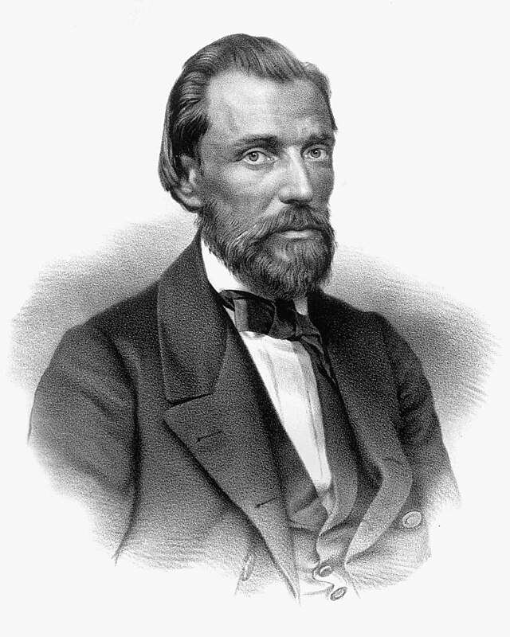

Иван Саввич Никитин (1824–1861 гг.) – известный русский поэт, мастер русского поэтического пейзажа. Его творчество преимущественно относится к реализму, хотя первые стихотворения содержали религиозные мотивы. Биография Никитина богата интересными событиями, давшими толчок развитию его литературного дара.
Детство и юность
Иван Саввич Никитин родился 21 сентября (3 октября) 1824 г. в Воронеже, в семье зажиточного мещанина. Его отец торговал свечками.
Грамоте будущий литератор выучился рано. Этому способствовало близкое знакомство с сапожником, проживающим по соседству.
Когда Ивану исполнилось 8 лет, его отдали в духовное училище. Закончив его, он поступил в семинарию. Но обучение там пришлось прервать. Причиной стало стремительное разорение отца, быстро пристрастившегося к “зеленому змию”, а также смерть матери.
Все заботы о семье легли на плечи молодого человека. Никитин поступил на службу в свечную лавку. Позже она была продана за долги. На вырученные средства был приобретен постоялый двор.
Творческий путь
Никитин не был в восторге от “казенщины”, которая преобладала в воронежской семинарии, где он обучался. Воспоминания о тяжких годах учебы были изданы в 1861 г. в форме дневника.
Первые стихотворения Никитина появились в 1849 г. Многие из них носили подражательный характер.
В 1851 г. было написано стихотворение “Русь”. Оно было издано 2 года спустя, в газете “Воронежские губернские ведомости”. Чуть позже его перепечатали в газете “Санкт-Петербургские ведомости”. Критики оценили патриотический пафос молодого поэта и стали называть его “новым А. Кольцовым”.
Позже стихотворения Никитина стали печататься в “Отечественных записках”, а также в журнале “Москватянин”.
После первых публикаций Никитин стал членом местного клуба, куда входила вся воронежская интеллигенция. “Сердцем” клуба был Н. И. Второв. Он вскоре стал близким другом Никитина. Вторым хорошим другом поэта стал М. Ф. Де-Пуле. Он стал редактором почти всех его произведений.
Самый первый сборник вышел в 1856 г. Там были собраны стихотворения на самые различные темы. В основном поэт обращался к социальным проблемам и к религии. Критики оценили этот сборник неоднозначно.
В 1859 г. вышел второй сборник стихов Никитина. В 1861 г. вышел его “Дневник семинариста”. Произведение было напечатано в газете “Воронежская беседа”.
Также Никитин написал такие стихотворения для детей, как “В темной чаще замолк соловей”, “Вечер ясен и тих”, “Живая речь, живые звуки”. Их сейчас изучают в 3 классе. С детства почувствовавший близость к природе, Никитин стал настоящим певцом родного края.
Особенности творчества
Значительное место в творчестве поэта уделено народным бедам и страданиям. Быт крестьянина замечательно описан в таких стихотворениях, как “Уличная встреча”, “Нищий”, “Мать и дочь”, “Пахарь”, “Жена ямщика”.
Никитин горячо сочувствовал русскому народу и от души желал улучшения его незавидного положения. В то же время поэт не занимался идеализацией крестьянства. Русский мужик представлен в его произведениях часто грубым, оскотинившимся домашним деспотом. По мнению некоторых коллег по перу, Никитин не был подлинно народным поэтом. Его мировоззрение было мировоззрением городского человека, который наблюдал за жизнью крестьянства со стороны. По этой причине, по мнению критиков, в его творчестве нет подлинной глубины.
Влияние на русскую музыкальную культуру
Изучая краткую биографию Ивана Савича Никитина, следует знать, что на его творчество обратили внимание такие композиторы, как Римский-Корсаков и Э. Ф. Направник. На слова поэта было написано более шестидесяти романсов и песен. Многие музыкальные произведения стали широко популярными в народе.
В 2009 г. композитор А. Шарафутдинов написал на слова поэта песенный альбом “Радость и кручина”.
Болезнь и смерть
Здоровье Ивана Саввича всегда было слабым. Он часто болел. В последние годы жизни он страдал чахоткой. Поэт ушел из жизни 16 октября 1861 г., в Воронеже. Покоится Иван Никитин на местном кладбище, неподалеку от могилы поэта А. Кольцова. Это место сейчас называется литературным некрополем.
Интересные факты
Летом 1855 г. слабый и болезненный Иван Никитин сильно простудился после купания в реке. Болезнь протекала очень тяжело, с осложнениями. Поэт долгое время не мог встать с постели. Несколько раз ему казалось, что он умирает. Но на помощь ему, по его собственным словам, пришла вера. После этого Никитин стал творить в несколько ином ключе. В его стихотворениях стали все чаще появляться религиозно-мистические нотки.
По некоторым данным, поэт страдал от наркотической зависимости. Он употреблял салохуанну – вещество, известное только в очень узком кругу.
В 1911 г. в Воронеже был установлен памятник И. Никитину. Его автором был скульптор И. А. Шуклин. В доме, где жил поэт, ныне функционирует его дом-музей. В период с 1949 по 1974 гг. выходили почтовые марки с изображением поэта.
Лучшие произведения
Когда закат прощальными лучами…
Когда Невы, окованной гранитом…
Над полями вечерняя зорька горит…
Полно, степь моя, спать беспробудно…
Песня бобыля
Постыдно гибнет наше время!..

Памятник Ивану Саввичу Никитину установлен в Воронеже на Никитинской площади.
Открытие памятника состоялось 16 октября 1911 года к 50-летию со дня смерти поэта. Бронзовую скульптуру работы Ивана Шуклина поставили посреди Театральной площади (ныне площадь Никитина).
В 1933 году памятник перенесли в Кольцовский сквер. В 1973 году он вернулся на прежнее место.
Памятник изображает поэта сидящим в задумчивой и печальной позе. Он ссутулил плечи, склонил голову, положил руки на колени. У ног поэта видна пара книг.